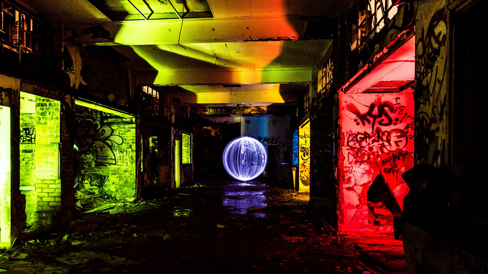

Nuevas Noticias
Accede a nuestra sección de noticias internas para leer las últimas noticias de nuestra biblioteca.
Accede a nuestra sección de noticias internas para leer las últimas noticias de nuestra biblioteca.
Accede a nuestra sección de Video-noticias para ver las últimas noticias de nuestra biblioteca.

Este curso tiene como finalidad enseñar al estudiante los conceptos y características básicas del arte urbano y el Graffiti como una rama del arte. Tiene como objetivos el aprendizaje de los conceptos básicos del arte urbano, analizar la importancia de los elementos característicos como la tipografía, simbología y efectos en la sociedad y finaliza con la Producción de una pieza de arte urbano.